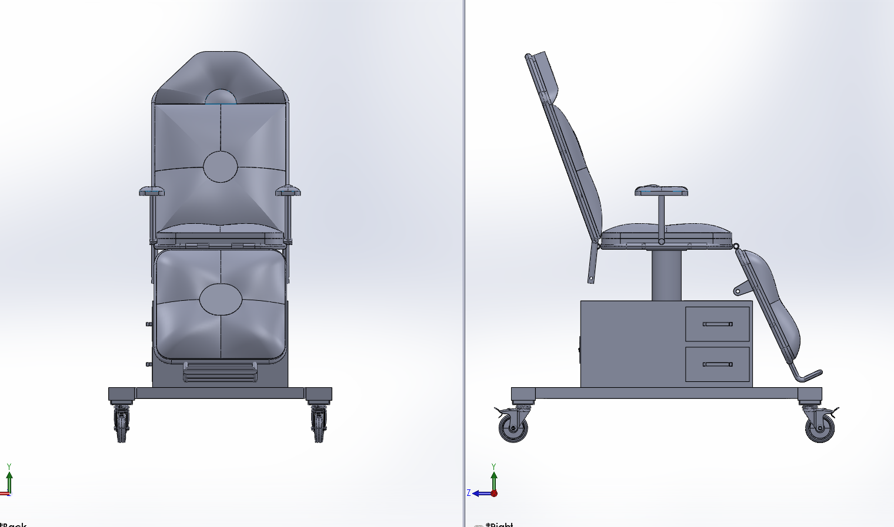
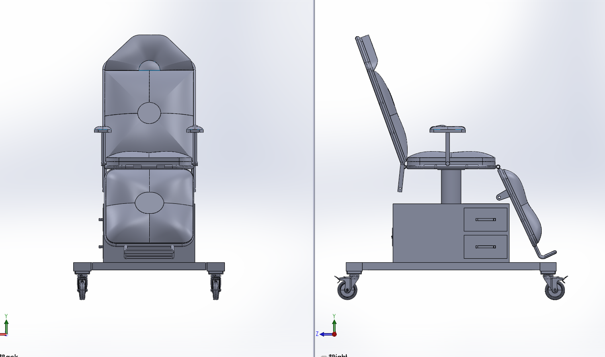

Project Overview
This project focuses on the CAD modeling and functional modification of a medical chair designed for clinical environments. The primary objective was to integrate a heating system within the chair to improve patient comfort during extended procedures.
Key Design Features
- Ergonomically contoured seat, backrest, and leg support
- Modular structure allowing easy maintenance and upgrades
- Integrated heater zones positioned for patient comfort
- Stable wheeled base for mobility within medical facilities
- Storage drawers integrated into the base structure
Tools & Technologies
Engineering Considerations
Special attention was given to maintaining structural integrity while introducing heaters into the chair assembly. The design ensures that heating elements do not interfere with mechanical components, patient safety, or ease of cleaning.
Outcome
The final CAD model successfully demonstrates a practical and manufacturable medical chair design that balances comfort, functionality, and safety. The project highlights skills in mechanical design, ergonomic modeling, and real-world product modification.